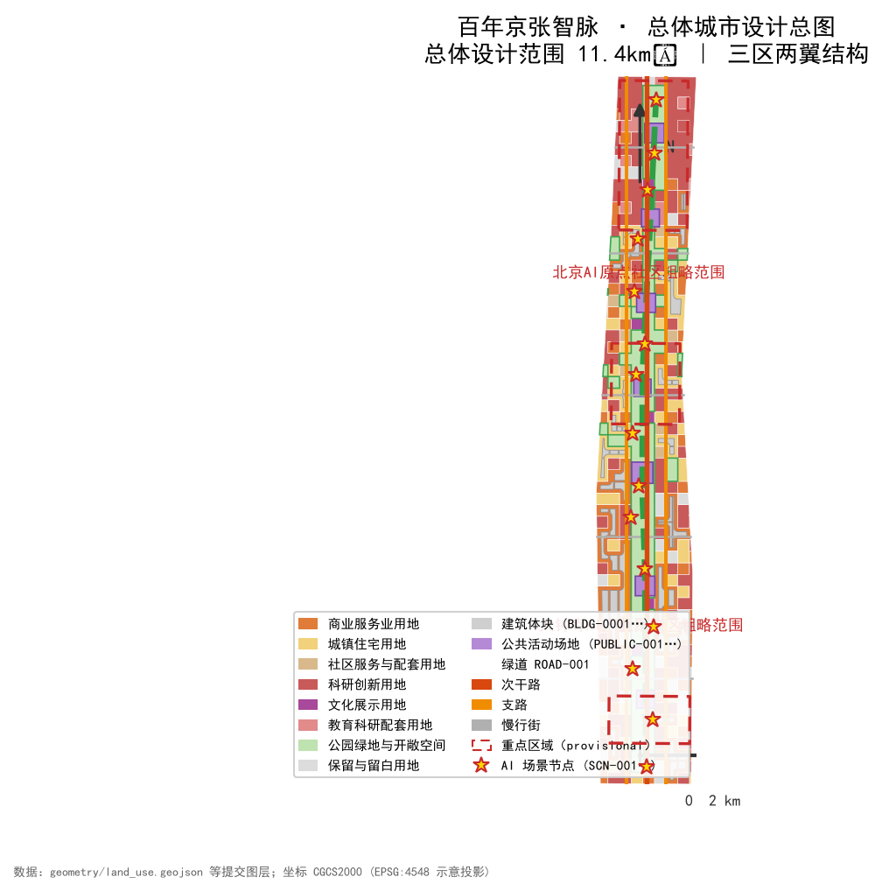
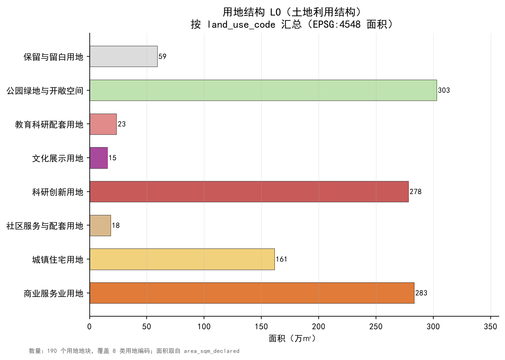
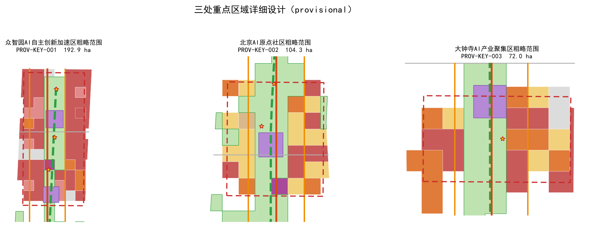
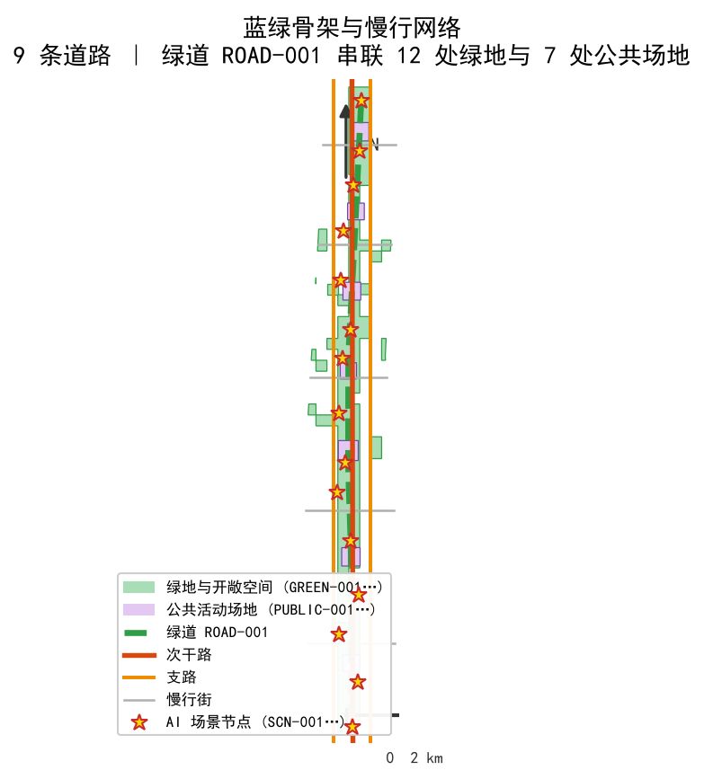
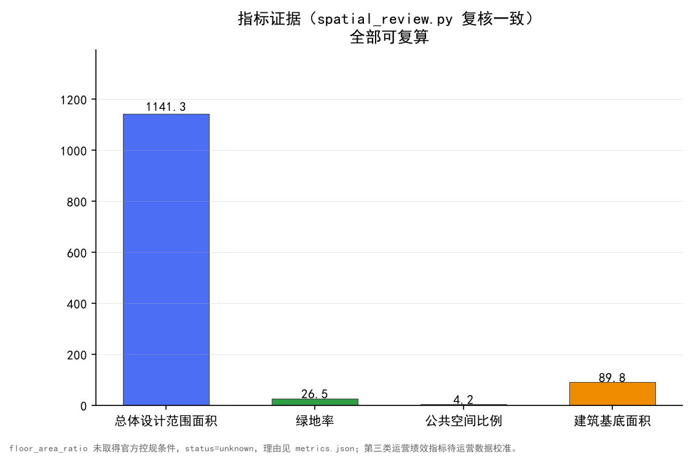

Centennial Jing-Zhang Smart Vein: Urban Design from Railway Artery to AI Vein
The 'Jing-Zhang Smart Vein' concept translates the century-old Jing-Zhang railway artery into an AI-vein urban design carrying full-stack indigenous AI innovation, a world-class innovation ecosystem, scenario enablement, a vibrant AI city, and global governance voice; generated on provisional boundaries with precision warnings and recalculation requirements.
Centennial Jing-Zhang Smart Vein: Urban Design from Railway Artery to AI Vein
Design Basis and Source List
This proposal takes the 《Pre-qualification Announcement for the International Design Solicitation of the Centennial Jing-Zhang AI Innovation Belt Urban Design》 published by the Haidian Branch of the Beijing Municipal Commission of Planning and Natural Resources as its primary basis; the announcement defines the tasks for three scopes: the coordinated research area, the overall design area, and the key detailed-design areas Source Standard. Machine-readable bases come from design_brief.json, agent_taskbook.json, allowed_design_space.json, enums/, ranges/, standards/, schemas/ and data/source_registry.json registered under brief/site-package/; the agent read the taskbook, allowed design space, source registry, and missing-data checklist before generation Source Source Source.
All design judgements are organised in four layers: traceable source, recalculable metric, checkable layer, and human-reviewable assumption. Claims carry only the directly relevant markers; the complete machine indexes live in sources.json, metrics.json, compliance_matrix.json, standard_matrix.json and design_depth_matrix.json, and are not repeated in prose Depth.
The site boundary of this proposal is the organizer-provided provisional constraint: the overall design area PROV-SITE-001 (~11.41 km²) and three key detailed-design areas PROV-KEY-001/002/003 — Zhongzhiyuan (~192.1 ha), Beijing AI Origin Community (~104.3 ha), and Dazhongsi (~72.0 ha) Spatial data Spatial data Metric. Because the qualification files are password-protected, the official redlines are not yet available; all geometry in this package is declared provisional_constraint with official_boundary=false and is used only for generation, display, self-check and design discussion — never as an official redline, approval basis, or precise-area basis Source Source. This organizer data gap does not block content scoring; once official boundaries are published, site boundary, key areas, land use, roads, green space, public space, buildings, phasing and metrics must all be recalculated.
data/processed/agent_fact_pack.md is the reading-navigation layer that organises the three scopes, announcement tasks, agent.1–agent.6, source use and missing-data checklist into a readable proposal Source. The missing official boundary, key area, regulatory plan, road redline, parcel, building, municipal, heritage-protection and public-service gaps all enter assumptions.json and are expanded in the risk chapter Depth.

Three-Level Scope Framework
The announcement organises the work in three levels: the coordinated research area (~43.6 km²) answers industry-ecosystem, strategic positioning, innovation-chain and future-city-form questions; the overall design area (~11.4 km²) implements the urban-renewal framework, industrial spatial layout, transport-municipal support and urban-character control; the key areas (three, totalling ~368.4 ha) require detailed design depth covering programs, building scale, retain-renovate-demolish classification, public-space systems and transport organisation Standard Depth.
This proposal translates the three levels into an overall spatial structure of "One Vein, Three Cores, Two Wings, Multiple Nodes": the Jing-Zhang heritage park is the historic and public-space main vein (One Vein); Zhongzhiyuan, Beijing AI Origin Community and Dazhongsi are the three innovation anchors (Three Cores); the Zhongguancun Technology Service Wing and the Xiaoyuehe Scenario Empowerment Wing organise east-west synergy (Two Wings); scenario nodes, transit stations and community centres form the everyday network (Multiple Nodes) Depth. Spatial evidence sits in geometry/site_boundary.geojson, geometry/key_areas.geojson, geometry/land_use.geojson and geometry/roads.geojson; task authority returns to the announcement and taskbook Spatial data Spatial data Source.
| Level | Design question | Proposal answer | Data anchor |
|---|---|---|---|
| Coordinated research area | How to organise the AI industry ecosystem and future city form | "University ideation — open-source collaboration — enterprise translation — public experience — global communication" innovation chain | compliance_matrix.json, standard_matrix.json |
| Overall design area | How to map industry space, renewal, transport-municipal and character | Land use, buildings, roads, green space, public space and phasing layers together | Spatial data、Spatial data |
| Key detailed-design areas | How to reach detailed design depth in three areas | Positioning, spatial moves, AI scenarios and implementation dependencies per area | Spatial data、Spatial data、Spatial data |
The three levels are not disconnected drawing sets: the coordinated level decides industry-chain and city-form judgements; the overall level implements them into renewal projects, spatial structure and facility capacity; the detailed level verifies implementability of parcels, buildings, transport, public space and AI scenarios Depth. Any area, ratio, scale or count that cannot be recalculated from structured data is never stated as a formal conclusion; boundary verification at each level uses metrics.json and scripts/spatial_review.py as evidence Metric Metric.

Coordinated Research Area: Industry and Future City Research
The coordinated research builds a "Jing-Zhang Smart Vein" naming system and a world-class AI innovation ecosystem synergy framework (agent.1, agent.2). The main name is 京张智脉 (Jing-Zhang Smart Vein): "vein" carries the century-old Jing-Zhang railway's artery imagery, and "smart" points to AI industry and governance voice, translating from railway artery to AI vein. The naming system has three levels: the belt master brand (Jing-Zhang Smart Vein), the three positioning belts (Centennial Jing-Zhang Culture Belt, Urban AI Living Experience Belt, AI-Integrated Innovation Belt), and sub-brands for key areas and scenarios (Zhizhi Acceleration Area, Origin Community, Dazhongsi Cluster), all reusing a unified "vein + node" visual language to avoid slogan naming Source Standard.
Three logo directions are proposed for further development: "Twin Tracks into a Vein" (two parallel lines evoking the Jing-Zhang railway and data flows converging into AI nodes), "Pixels on Rails" (railway sleepers translated into digital pixel arrays), and "Centennial Ring" (a closed loop symbolising governance, safety and sustainability). All three are directional; fonts, icons, images, trademarks and persons must be rights-cleared before official use, and this package contains no unauthorised brand assets Depth.
The five functions and the three-areas-two-wings synergy loop: the AI full-stack indigenous innovation system relies on Zhongzhiyuan (models, compute, data, standards, safety and testing); the world-class AI innovation ecosystem relies on the AI Origin Community (university ideation, open-source collaboration, incubation and talent zone); the AI+ scenario empowerment paradigm relies on the Xiaoyuehe Scenario Empowerment Wing and public experience routes (transport, services, consumption, education, healthcare); the smart vibrant AI city is carried by the blue-green public space, slow-mobility network and smart municipal infrastructure of the overall design area; the global governance voice of AI is carried by the safety-governance sandbox, standard workshops, international roadshows and public participation mechanisms Depth Depth.
Global AI innovation ecosystem cases (5–8, as reference case studies, not investment commitments) include: open-source collaborative ecosystems (global open-source organisation models built on open codebases, contributor communities and license governance), university-originated ecosystems (university-town models with incubators, accelerators and translation streets around top universities), corporate park ecosystems (leading-enterprise park models combined with open innovation platforms), industry-alliance ecosystems (standards, safety evaluation and alliances aggregating SMEs), vertical-scenario ecosystems (autonomous driving, medical imaging, education technology clusters), and cross-border innovation-corridor ecosystems (corridors for international talent, cross-border data and overseas markets) Source Source. Cases serve only to extract spatial mechanisms — open space, test fields, release halls, talent services and governance nodes — without fabricating enterprise lists, investment figures, output values or fiscal commitments.
The ecosystem map is organised in three layers — elements (talent, compute, data, capital, scenarios), mechanisms (open source, standards, safety, evaluation, attraction, operation) and space (R&D, incubation, testing, exhibition, roadshows, housing) — anchored in geometry/land_use.geojson research land (0802), commercial-service land (05), education-support land (0804) and reserve land (16) Spatial data Depth. All "global events, developer communities, pilgrimage routes" are stated as conceptual suggestions for professional teams to develop, not confirmed arrangements.
Overall Design Area: Urban Renewal and Regulatory-Plan-Level Urban Design
The overall design area (~11.4 km²) targets regulatory-plan-level urban design depth. The overall spatial structure is "One Vein, Three Cores, Two Wings, Multiple Nodes": the green main vein runs north-south, three key areas unfold along it, the Zhongguancun Technology Service Wing and Xiaoyuehe Scenario Empowerment Wing stitch east-west, and transit stations, community centres and scenario nodes form the multi-node network Depth Depth.
The land-use layout is expressed as a complete, closed, seamless partition: research land (0802) concentrates around Zhongzhiyuan and the AI Origin Community; commercial-service land (05) forms the Dazhongsi industry cluster; residential and community-service land (0701, 0702) sit in the wings and community belts; education-support land (0804) connects university resources; cultural land (0803) lines the heritage green vein; park land (1401) forms the blue-green skeleton; reserve land (16) keeps elasticity for future scenarios and testing Standard Spatial data. geometry/land_use.geojson fully covers the design boundary with no gaps or overlaps, verified by the LAND_USE_COVERAGE_GAP / LAND_USE_OVERLAP checks of scripts/spatial_review.py.
Building footprints in geometry/buildings.geojson express design-proposal massing covering AI R&D, incubation, office, commercial, residential and cultural display types; because current buildings and ownership data are missing, retain-renovate-demolish classification is given as a methodology checklist, not fabricated demolition or retention conclusions Spatial data Metric Depth. Control indicators such as height, FAR, density, setback and road redlines are uniformly recorded in metrics.json with status=unknown (e.g., floor_area_ratio) with the reason and recalculation path stated, so suggested values do not fake precision Depth Depth.
Transport and municipal work answer capacity questions at the overall level: transit-station TOD and interchange, slow-mobility micro-circulation stitching parcels, and new infrastructure (edge compute, distributed energy, smart municipal) embedded as nodes in public space and industrial parcels; utility, fire, flood and energy conditions are prerequisites for formal deepening, not approved conclusions Depth Depth Spatial data Spatial data.
Detailed Design of Key Areas
The three key areas must reach planning-implementation-plan urban design depth; positioning, spatial moves, AI scenarios and implementation dependencies are given below (all mapped to agent.1–agent.6) Standard Depth.
Zhongzhiyuan AI Indigenous Innovation Acceleration Area (~192.1 ha, PROV-KEY-001): positioned as a garden-style full-stack innovation district. Spatial moves: strengthen the Qinghe waterfront as a low-carbon innovation interface, organise an industry-exhibition axis and external transport, and carry open testing, standard workshops and safety-governance exhibitions in green space; AI scenarios include the indigenous model test field, standards and safety sandbox, and low-carbon compute experience hall. Dependencies: Qinghe blue line and flood conditions, park ownership and current-building survey, road redline and external transport review Spatial data Metric.
Beijing AI Origin Community (~104.3 ha, PROV-KEY-002): positioned as a university-adjacent translation and talent community. Spatial moves: stitch campus-park gaps with slow mobility, organise street-level release, incubation, legal, IP and financing services, and complete talent housing and life services; AI scenarios include the open-source release hall, the university translation street, and the talent-zone service station. Dependencies: campus boundaries and ownership, ground-floor program renewal conditions, transit-station integration Spatial data Source.
Dazhongsi AI Industry Cluster (~72.0 ha, PROV-KEY-003): positioned as an urban smart economy and international-exchange district. Spatial moves: organise four-quadrant pedestrian connectivity around Dazhongsi station integration, support AI-native new business through commercial services and compound planning-green-space use, and form exhibition and trading interfaces for agents, smart terminals, content consumption, data elements and digital assets; AI scenarios include the international roadshow living room, the data-elements reception hall, and the smart-terminal experience street. Dependencies: transit-station integration, intersection and utility conditions, planning-green-space compound-use permits Spatial data Metric.
| Key area | Positioning | Spatial moves | AI industry and operation scenarios | Evidence |
|---|---|---|---|---|
| Zhongzhiyuan AI indigenous innovation acceleration | Garden-style full-stack innovation district | Qinghe waterfront, industry exhibition, open testing, external transport | Indigenous model testing, standard workshops, safety-governance exhibition, low-carbon compute experience | Spatial data、Depth |
| Beijing AI Origin Community | University-adjacent translation and talent community | Campus-park slow stitching, release, talent services, open-source collaboration | Open-source community, release, talent zone, university-adjacent incubation | Spatial data、Source |
| Dazhongsi AI industry cluster | Urban smart economy and international exchange | Station-city integration, four-quadrant walking, commercial-green compound | Agent and terminal exhibition, content consumption, data elements, international roadshow | Spatial data、Metric |

All three key areas are marked provisional_constraint with official_boundary=false, usable only for design discussion and self-check, never as official redlines or precise-area bases; the announcement items 1.5.3.1/1.5.3.2/1.5.3.3 and agent.1–agent.6 are linked in compliance_matrix.json Source Standard.
AI Innovation Ecosystem, Personas, and AI+ Scenarios
The proposal builds spatial-requirement personas for AI talent and enterprises covering R&D office, open-source collaboration, release, enterprise services, talent housing, social learning, consumption, sports and international exchange (agent.3). At least five persona types:
| Persona | Typical needs | Spatial response | Self-check boundary |
|---|---|---|---|
| Open-source developer | Release, collaboration, testing, community reputation | Origin Community open-source release hall, public code wall, night collaboration space | No personal behaviour tracking; event data aggregated only |
| Startup team | Low-cost office, compute access, product testbed | Zhongzhiyuan shared test field, edge-compute service point, standards-governance consulting | Compute and data services require separate authorisation |
| Enterprise visitor | Exhibition, business, international reception, hiring | Dazhongsi international roadshow living room, transit connection, public space around anchor firms | Enterprise marks and cases require rights clearance |
| Nearby resident | Commute, leisure, community services, low-impact renewal | Heritage green-vein slow loop, embedded community services, graded night lighting and events | Resident personas not used for commercial recommendation |
| University faculty and students | Translation, cross-campus collaboration, daily walking | Campus-park slow stitching, translation stations, AI education experience | Campus data and research results require authorisation |
At least ten AI scenario cards, each stating service object, spatial location, data sources, privacy boundary, human-review mechanism and operator:
| Scenario card | Spatial carrier | Design note |
|---|---|---|
| 01 Open-source release hall | Beijing AI Origin Community | Release, code-contribution display and small roadshows for universities, open-source communities and startups |
| 02 Safety-governance sandbox | Zhongzhiyuan | Translates standard-setting, safety evaluation and model red-team testing into a visible, bookable, supervised node |
| 03 Edge-compute station | Overall-area nodes | Prototype of new infrastructure coupled with public services and low-carbon energy, to be deepened |
| 04 AI slow-mobility navigation | Heritage green-vein vitality belt | Explainable wayfinding and low-intrusion sensing identify bottlenecks, crowding and accessibility needs |
| 05 Dazhongsi international roadshow living room | Dazhongsi AI industry cluster | Exhibition, negotiation, media release and international exchange for agent, terminal and content firms |
| 06 Qinghe low-carbon innovation gallery | Zhongzhiyuan Qinghe waterfront | Green space, stormwater, walking-cycling and AI display combined as the park's public living room |
| 07 University translation street | Beijing AI Origin Community | Incubation, exhibition, legal, IP and financing services for university translation |
| 08 Data-elements reception hall | Dazhongsi | Compliance, authorisation and auditability first: the city-service interface for data-element and digital-asset circulation |
| 09 AI life-service model street | Community-commerce crossings | Medical, education, legal and life-service AI scenarios at operable small-block scale |
| 10 Global AI Week route | Belt public-space system | Walkable, shareable experience route from heritage culture through open-source community to international roadshow |
| 11 Smart station-city interchange hall | Dazhongsi and Origin Community stations | Transit interchange, non-motorised parking, shared connections and AI wayfinding in one public space |
| 12 Scenario open-day main venue | Zhongzhiyuan open testing area | Bookable test field and release venue for industrial test-and-verification scenarios |
At least three AI industry test-and-verification scenarios: (a) Indigenous model safety-evaluation field — in the Zhongzhiyuan safety-governance sandbox, bookable, data-minimising, human-reviewed evaluation flows serving standards and safety display, not replacing official evaluation qualifications; (b) edge-compute and edge-service verification corridor — 3–5 lightweight prototypes along the green vein verifying latency, energy and privacy boundaries of public-service scenarios, as prototypes pending deepening, not approved deployment; (c) slow-mobility flow and accessibility sensing pilot — a pilot segment between the Origin Community and Dazhongsi station using explainable sensing to aggregate bottleneck and accessibility statistics, collecting no personal data and tracking nobody Source Spatial data Spatial data.
Scenario-space-operation mapping links "scenario card — layer — metric — operator": public-space scenarios cite geometry/public_space.geojson, slow-mobility and transport scenarios cite geometry/roads.geojson, open-space scenarios cite geometry/green_space.geojson with green and public-space ratios Spatial data Spatial data Metric Metric. The Xiaoyuehe Scenario Empowerment Wing is the eastern carrier for scenario trials and public experience, forming a "service + scenario" loop with the western Zhongguancun Technology Service Wing Depth.
All AI scenarios observe data-minimisation, public-source, explainability and human-review principles: urban agents may assist in identifying bottlenecks, heat, maintenance, enterprise-service demand and event-safety risk, but may not replace planning approval, output unauthorised personal profiles, or claim official implementation commitments; privacy and human-review boundaries are written into compliance_matrix.json and the HTML page Source.
Land Use, Building Scale, and Retain-Renovate-Demolish Strategy
Land use follows the national land-use survey, planning and use-control classification guide, forming a complete, closed, seamless partition (codes in enums/land_use_codes.json) Standard Spatial data. The structure: 49 research parcels (0802) as core innovation carriers, 45 commercial-service parcels (05), 40 residential parcels (0701), 21 reserve parcels (16), 12 park parcels (1401), with education (0804), community-service (0702) and cultural (0803) parcels as support — expressing "R&D concentration, industry-city integration, blue-green networks" Depth.
The building strategy distinguishes five suggested levels — retain, renovate, renew, new-build and to-be-confirmed. The 56 footprints in geometry/buildings.geojson are design-proposal massing expressing type, scale and layout; because current buildings, ownership, regulatory plans and engineering conditions are missing, this proposal only provides the methodology and a calibration checklist, never fabricated retain-renovate-demolish conclusions Spatial data Metric Depth. Height, massing, interface and character control are stated in three grades — official control, design suggestion, to-be-confirmed — detailed under the height/massing/character depth item Depth.
Building scale and intensity indicators must agree with metrics.json and the layers: building_footprint_area_sqm is recalculated from the building layer; FAR, density, controlled green ratios, setback and building control lines, lacking official conditions, uniformly use status=unknown with the reason and recalculation path, never faking precision with fixed numbers Metric Depth Depth.
Transport, Rail, Municipal Infrastructure, and Public Services
The transport proposal responds to the announcement's requirements on transit-station integration, road micro-circulation, slow-mobility gaps, external transport, parking and green transport, focusing on the heritage-park cross-ring-road nodes, Wudaokou, West Qinghua East Road, Dazhongsi station and anchor-firm surroundings Source Standard. geometry/roads.geojson expresses a slow-mobility-priority "one vein, multiple cross-links" network with greenway, secondary roads and pedestrian corridors: the greenway runs along the Jing-Zhang Smart Vein north-south, secondary roads organise district connections, pedestrian corridors link stations and parcels Spatial data Depth.
The transport strategy has three layers: at the rail layer, Dazhongsi, Wudaokou and other stations organise integrated interchange; at the road layer, micro-circulation supplements the branch network with concentrated non-motorised parking and shared connections around stations; at the slow-mobility layer, the greenway main vein links key areas and public-space nodes and stitches identified gaps Spatial data Metric. Because the submitted boundary is provisional, transport conclusions are temporary design discussion; road redlines and engineering conditions remain to-be-confirmed Depth.
Municipal and public-service facilities cover AI industry services, innovation platforms, talent life services, new infrastructure (edge compute, distributed energy), smart municipal and traditional municipal integration, stating standards, layout, service radius, operation model and phasing; missing utility, drainage, flood and fire engineering data become prerequisites for formal deepening Depth Spatial data Depth.

Blue-Green Network, Public Space, and Urban Character
The blue-green network uses the Jing-Zhang heritage green vein as its backbone, coordinating Qinghe, Xiaoyuehe and travel needs of universities, enterprises and communities into a north-south through, east-west connected walking, cycling and green-space system: the main vein runs through the heritage-park vitality belt, the Qinghe interface organises the low-carbon innovation gallery, the Xiaoyuehe side organises the scenario wing's waterfront experience, and public space takes station squares and community living rooms as nodes Depth Spatial data Spatial data. Green and public-space ratios are recalculated in metrics.json and interpreted in the metrics chapter Metric Metric.
AI public space proposes "perceivable smart public space": the Jing-Zhang heritage-park AI public space uses low-intrusion, explainable wayfinding and sensing to identify bottlenecks, crowding and accessibility needs; east-west stitching proposes directional ideas through overpass/level-crossing node studies, underground-space reserve concepts and bridge-under-space activation, all stated as pending professional deepening without engineering conclusions Source Depth.
Urban character blends Jing-Zhang railway history, Zhongguancun innovation culture and AI new culture: anchored at the Tsinghua Garden station and other cultural resources, it proposes urban tone, architectural character, roof form, massing and interface guidance and a wayfinding/public-art system; all brands, fonts, images, portraits and enterprise marks require rights clearance; character control separates official control, design suggestion and to-be-confirmed conditions Standard Depth. The narrative, signage and communication copy are detailed in the culture chapter (agent.5).
AI pilgrimage landmarks (at least three) are proposed as conceptual suggestions: (1) Smart Vein Origin Station (AI Origin Community open-source release hall) — "first line of code" as narrative motif with a contribution wall and honour display system (requires rights-clearance and authorisation mechanisms); (2) Centennial Track Memorial (Tsinghua Garden station area on the heritage green vein) — cultural display and public-art nodes contrasting railway history with AI innovation (requires heritage conditions); (3) Governance and Future Hall (Zhongzhiyuan safety-governance sandbox and low-carbon compute hall) — displaying full-stack innovation and governance voice around safety, standards and sustainability (requires park ownership and an operator) Source Depth Spatial data. Landmarks observe the principles of not violating heritage, green, blue-line or traffic-safety constraints, not giving bridge/tunnel engineering conclusions, not altering enterprise or owned space without authorisation, and not being over-entertained, internet-famous or vulgar.
Renewal Projects, Implementation Policy, and Phasing
The implementation plan forms an auditable renewal project list stating location, type, function, responsible party, dependencies, implementation stage, risk and evaluation indicators Depth Depth:
| ID | Project | Type | Key dependencies | Evidence |
|---|---|---|---|---|
| JZ-01 | Heritage green-vein slow-mobility gap stitching | Public space/transport | Road redlines, under-bridge space, traffic review | Spatial data |
| JZ-02 | Zhongzhiyuan Qinghe low-carbon innovation interface | Blue-green/industry display | River blue line, ecology and flood conditions | Spatial data |
| JZ-03 | Origin Community university translation street | Renewal/industry service | Campus boundaries, ownership, ground-floor programs | Spatial data |
| JZ-04 | Dazhongsi station four-quadrant pedestrian link | Rail integration/slow mobility | Transit station, intersections, utilities | Spatial data |
| JZ-05 | Edge-compute and public-service nodes | New infrastructure/public service | Energy, compute, safety, operator | Spatial data |
| JZ-06 | Global AI Week public route | Operations/brand | Public-space permits, event safety, rights clearance | Spatial data |
Policy recommendations cover consolidated renewal implementation, space supply, operation mechanisms, industry services, public participation, data governance and ownership coordination; phasing is expressed in geometry/phasing.geojson in three stages: Phase 1 (near term) — Origin Community vitality renewal, starting with lightweight facilities, operational events and service pilots; Phase 2 (mid term) — Zhongzhiyuan full-stack indigenous innovation on park renewal and new infrastructure; Phase 3 (long term) — Dazhongsi industry agglomeration and wing webbing after formal regulatory, municipal, transport and ownership conditions are confirmed Spatial data Depth. Phasing is clearly distinguished from the 100-day solicitation period: the latter is a submission deadline, the former is the urban-renewal implementation path.
Metrics, Area Recalculation, and Compliance Matrix
Indicators are managed in three classes: Class 1 spatial-recalculation metrics (directly recalculable): overall area (site_area_sqm≈1141.3 ha), green ratio (green_ratio≈26.5%), public-space ratio (public_space_ratio≈4.2%), building footprint (building_footprint_area_sqm≈898,000 m²), key-area count (key_area_count=3) — all verified consistently by scripts/spatial_review.py in EPSG:4548 Metric Metric Metric Metric Metric; Class 2 control metrics (needing official regulatory plans): FAR, height, density, setback, road redlines and facility standards, status=unknown with reasons Depth Depth; Class 3 operational performance metrics: AI innovation index, talent density, slow-mobility accessibility, event participation, scenario usage — to be calibrated with operational data, entered in assumptions.json and the compliance matrix.

The compliance matrix is the master control of task responsiveness: announcement 1.3 (three tasks), 1.4 (overall design), 1.5 (key areas and special topics) and agent.1–agent.6 are all mapped to report sections, layers, metrics, drawings, HTML pages, sources, assumptions and self-checks; missing any mandatory task keeps the package out of formal professional scoring Standard Standard. Metric recalculation follows the five elements — boundary, layer, formula, confidence, assumption — so every known metric is reproducible from GeoJSON or trusted sources, and unknown metrics state reasons and prerequisites Depth Source.
Risk, Copyright, and Compliance
Bilingual requirement. The main file is Chinese with proposal.en.md as the full mirror translation; A3/A0 drawings, HTML pages and text-bearing figures all provide English counterparts, with terminology following docs/terminology-glossary.md recommendations Source. All images, drawings, icons, data and code assets state source, licence and authorisation in sources.json and report/copyright_statement.md; HTML pages load no remote scripts, map tiles, fonts, iframes, forms or external APIs and do not track reviewers Source.
Risks and the missing-data checklist are verified by the risk depth item, the constraints layer and the site package Depth Spatial data Source. Key risks: official boundaries and regulatory plans missing (declared provisional with a recalculation path), ownership and implementation parties pending (renewal list states risk, not commitment), event and operation mechanisms pending operators (stated as conceptual suggestions), and data-privacy and safety boundaries (scenario cards and personas define human-review mechanisms). The gaps in missing_data_checklist.csv — official boundary, key areas, regulatory plans, roads, parcels, buildings, municipal, heritage and public services — all enter assumptions.json, self-checks and the risk chapter Source.
This proposal does not claim official approval, approved regulatory plans, final land ownership, final construction scale or guaranteed implementation. The AI agent is responsible for facts, sources, copyright, spatial data, indicators and expression; maintainers and professional reviewers may request rework or rejection based on self-checks, spatial review and the compliance matrix Source Standard.
References
- brief/public-brief.md
- brief/site-package/design_brief.json
- brief/site-package/agent_taskbook.json
- brief/site-package/allowed_design_space.json
- brief/site-package/enums/
- brief/site-package/ranges/planning_limits.json
- brief/site-package/standards/standards.json
- brief/site-package/geometry/provisional_boundaries.geojson
- data/processed/agent_fact_pack.md
- data/processed/project_scope_summary.csv
- data/processed/agent_task_requirements.csv
- data/processed/source_use_matrix.csv
- data/processed/missing_data_checklist.csv
- Complete machine indexes:
sources.json,metrics.json,compliance_matrix.json,standard_matrix.json,design_depth_matrix.json - Entry points follow the site-package registry; full provenance and licences are in the structured source list Source